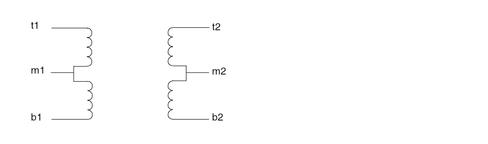
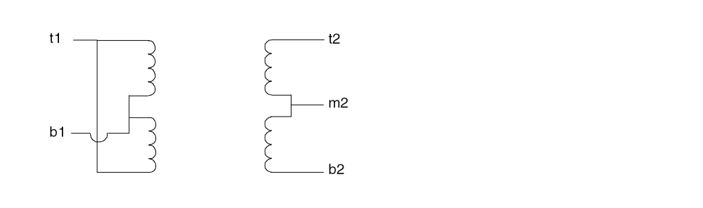

20
Identifying Problems and Troubleshooting
This chapter discusses the following topics:
- Error Conditions
- Spectre Warning Messages
- Customizing Error and Warning Messages
- Controlling Program-Generated Messages
- Correcting Convergence Problems
- Correcting Accuracy Problems
- Packaging a Test Case for Shipment to Cadence
Error Conditions
Error conditions terminate a Spectre® circuit simulator run. If you receive any of the messages described in this section, you must fix the problem and rerun the simulation.
Invalid Parameter Values That Terminate the Program
If you enter a parameter that causes the Spectre simulator to stop or puts a model in an invalid region, such as giving z0=0 to a transmission line, the Spectre simulator sends you a message like this one and exits.
Error from spectre during hierarchy flattening.
tl1: Value of 'z0' should be nonzero.
spectre terminated prematurely due to fatal error.
To run the simulation, you must change the parameter to an acceptable value.
Singular Matrices
If you receive an error message that says a matrix is singular, your netlist contains either a floating node which is causing the problem or a loop of zero resistance branches, for example, a loop of voltage sources or inductors. The following procedures might help you find the problem:
-
Check the
optionsstatement in your netlist to ensure thattopcheck=fullin at least one statement. The topology checker normally helps you identify singular matrix problems, but it cannot do so if it is disabled. -
If the error message appears only for particular components or circuit parameters or only for particular voltages or currents, try one of the following procedures:
-
Set
gmin=1e-12(the default value). - If you are working with simplified semiconductor models, try using more complex models.
A CMOS (complementary metal oxide semiconductor) inverter whose model parameters have infinite output impedance in saturation demonstrates the usefulness of these techniques. When either the N- or P-type device is in the ohmic region, the solution is unique. However, when both devices are saturated, there is a range of output voltages that all satisfy Kirchhoff’s Current Law. In this situation, the Newton-Raphson method forms a linearized circuit that is singular for that iteration. -
Set
-
Check ideal transformers, N-ports, or transmission lines for floating nodes or loops of zero-resistance branches and modify the circuit to eliminate them.
For example, consider this center-tapped transformer:
subckt ct_xfmr (t1 b1 t2 m2 b2) Tt t1 m1 t2 m2 transformer n1=2 Tb m1 b1 m2 b2 transformer n1=2 end ct_xfmr
If you use this transformer and leave the center-tap terminal (m2) floating, the Spectre simulator notifies you of a singular matrix. Because bothm1andm2are floating, the DC solution is not unique.
If you choose a different topology for the transformer, like the one in the following example, you can avoid the problem.
subckt ct_xfmr (t1 b1 t2 m2 b2) Tt t1 b1 t2 m2 transformer n1=2 Tb t1 b1 m2 b2 transformer n1=2 end ct_xfmr
Circuits that contain ideal transformers, N-ports, or transmission lines can have floating nodes or loops of zero-resistance branches because the topology checker cannot adequately verify these components. Finding these currents is difficult because all these components act like ideal transformers at DC. When you look into one port of a transformer, you can see either a short or an open circuit, depending on what you see looking out of the other port.
Internal Error Messages
If the Spectre simulator detects an internal error, it displays a message like one of the following:
Internal error detected by spectre. Please seehttp://support.cadence.com/wps/mypoc/cos?uri=deeplinkmin:COSHome for Customer Support contact information.
Error detected in file 'file.c' at line 101.
Internal error detected by spectre. Please seehttp://support.cadence.com/wps/mypoc/cos?uri=deeplinkmin:COSHome for Customer Support contact information.
Arithmetic exception.
Cadence can help you find solutions to these problems. If you get one of these messages, call Cadence Customer Support or contact a Cadence application engineer.
Time Is Not Strictly Increasing
PWL takes a wave parameter that accepts time/value pairs. If the time value does not increase, the Spectre simulator displays the following message:
Error found in spectre during initial setup.
Check the PWL component to fix this error.
Spectre Warning Messages
Warning messages tell you about conditions that might cause invalid results. Unlike error messages, warnings do not stop a simulation. When you receive a warning message, you must decide whether the particular condition creates a problem for your simulation. This section describes some common Spectre warning messages. It also tells you how to modify parameters to correct conditions that might produce invalid simulation results.
The Spectre simulator often prints warnings and notices that are eventually determined to be “uninteresting,” and there is a natural tendency after a while to ignore them. We recommend that you carefully study them the first few times you simulate a particular circuit and whenever the simulator gives you unexpected results.
P-N Junction Warning Messages
Almost every semiconductor device includes at least one p-n junction. Normally, these p-n junctions are biased in a particular operating region. Three types of warning messages are available for each p-n junction, one for exceeding a maximum current, one for exceeding a melting current, and one for exceeding a breakdown voltage.
Explosion Region Warnings
Warning from spectre at dc = 191 mA during DC analysis ‘srcSweep'.
mos_mod: The bulk-drain junction current exceeds `imelt'.
The results computed by Spectre are now incorrect because the junction
current model has been linearized.
xram.d3247: The junction is melting (increase imax)
The Spectre simulator provides two parameters, imax and imelt, that limit the current across a PN junction. These parameters aid convergence and prevent numerical overflow. The junction characteristics of the device are assumed to be accurately modeled for current up to imax. If imax is exceeded during iterations, the linear model is substituted until the current drops below imax or until convergence is achieved. If convergence is achieved with the current exceeding imax, the results are inaccurate, and Spectre prints a warning similar to the first one above.
The imelt parameter is used as a limit warning for the junction current. This parameter can be set to the maximum current rating of the device. By default it is set to the value of imax. When any component of the junction current exceeds imelt, Spectre issues a warning and again the results become inaccurate. The junction current is linearized above the value of imelt to prevent arithmetic exceptions.
Both these parameters have current density counterparts, jmax and jmelt, that you can specify if you want the absolute current values to depend on the device area.
Melting Current Warnings
A separate model parameter, imelt, is used as a limit warning for the junction current. This parameter can be set to the maximum current rating of the device. When any component of the junction current exceeds imelt, Spectre issues a warning and the results become inaccurate. The junction current is linearized above the value of imelt to prevent arithmetic exception, with the exponential term replaced by a linear equation at imelt.
Breakdown Region Warnings
Messages like the following are breakdown region warnings:
D2: Breakdown voltage exceeded.
Q1: The collector-substrate voltage exceeded breakdown voltage.
The warning message identifies the relevant component name (D2 and Q1) and the affected junction.
The Spectre simulator issues breakdown region warnings only when you specify conditions for them. For information on setting parameters to identify a breakdown region, see
Missing Diode Would Be Forward-Biased
Warning from spectre at time = 501.778 ns during transient analysis tran_to_1u.
i1.q0: Missing collector-substrate diode would be forward biased.
Notice from spectre at time = 510.1688 ns during transient analysis tran_to_1u.
i1.q0: Missing collector-substrate diode returns to normal bias condition.
Most p-n junctions in semiconductor models include both a resistive (the diode) and a capacitive (the junction capacitance) model. If the diode reverse saturation current is set to zero, the resistive part of the junction is turned off, and the Spectre simulator assumes that the resistive portion of the junction does not exist (but the junction capacitance may still be present). In this case, if the voltage across the missing diode is larger than 10 * Vt (where Vt is the thermal voltage), Spectre will issue a warning message telling you that the junction, which is missing, will be forward biased. A follow-up notice is issued if, and when, the device returns to a normal bias condition.
Tolerances Might Be Set Too Tight
When you simulate high-voltage or high-current circuits, the default tolerances might be tight enough to make convergence difficult or impossible. If you get a “Tolerances might be set too tight” message, try relaxing tolerances by increasing the value of reltol, iabstol, and vabstol.
Parameter Is Unusually Large or Small
The Spectre simulator checks the parameter values to see if they are within a normal range of expected values. This check can catch data entry errors or identify situations that can cause the Spectre simulator to have difficulties simulating the circuit.
The “Parameter is unusually large or small” message issues a notice about a parameter value. The message looks like one of the following:
NPNbjt: 'rb' has the unusually small value of 1mOhms.
PNPbjt: 'tf' has the unusually large value of 1Gs.
OA1.Q16 of ua741: 'region' has the unusual value of rev.
If you receive such a message, check the parameter. If the unusual parameter value is correct, you can ignore this message.
The limits settings that generate these warning messages are soft limits, as opposed to hard limits settings. Hard limits stop a simulation if they are violated. the Spectre simulator has automatic soft limits on a few parameter values. However, you can override these limits or specify your own limits for parameters that do not have automatic limits. For more information, see
gmin Is Large Enough to Noticeably Affect the DC Solution
Warning detected by spectre during DC analysis oppoint.
Gmin=1pS is large enough to noticeably affect the DC solution.
By default, the Spectre simulator (and SPICE) adds a very small conductance of 10-12 siemens called gmin across nonlinear devices. This conductance prevents nodes from floating if the nonlinear devices are turned off. By default, GMIN=1e-12 Siemens. The gmin parameter usually has a minimal effect on circuit behavior. However, some circuits, such as charge storage circuits are very sensitive to the small currents that flow through gmin.
You see a message such as the one given above if the current flowing through the gmin conductors, when treated as an error current, does not meet the gmin criteria. That is, the message is displayed if the current that enters any node from all attached gmin conductors is larger than either iabstol or reltol multiplied by the sum of the absolute value of the individual currents that enter the node.
If your circuit is not sensitive to small leakage currents, you can ignore this message. If your circuit is sensitive to these currents, reduce the gmin value or set it to zero.
Minimum Timestep Used
If this problem occurs, the analysis continues, and a warning message is displayed at each time point that does not meet the convergence criteria. In the Spectre simulator, this is very rare, but it does occur. Occasionally, this needs to be remedied to get the correct solution.
- Make sure devices have junction and overlap capacitance specified.
-
Increase
maxiters, but do not go higher than 200. -
Change to the
gear2orgear2onlymethod of integration. -
Reduce other occurrences of the local truncation error cutting the timestep. Increase
lteratioand increase the absolute error tolerancesvabstolandiabstol. Do not go too high with any of these. -
Combine 2, 3, and 4 and set
cminto prevent instantaneous change at every node in the circuit. -
Relax
reltolin combination with 5.
Syntax Errors
Warning from spectre in indab_7 during circuit read-in:
na300.scs" 27: `c11': Encountered statement in Spectre format while in Spice language mode. This will not be supported in a future release.
The Spectre parser is dual mode and accepts both the Spectre native language and documented Spice2G6. The default for the Spectre simulator is SPICE. If you include a file written in Spectre native syntax, you must either specify simulator lang=spectre or name the file with a .scs suffix. After Spectre processes the file, it reverts to the default mode. It is illegal to include Spectre syntax in the SPICE mode or vice versa.
For the MOS instance line given below:
M1 1 2 0 0 NCH W= 10u L= 2u
Spectre displays the following warning:
m1: Encountered statement in Spectre format while in SPICE language mode. This will not be supported in a future release.
Since the instance statement is valid in both languages, you can ignore this warning.
Topology Messages
Notice from spectre during topology check.
Only one connection to the following node:
4
No DC path from node `4' to ground, Gmin installed to provide path.
The Spectre topology checker identifies floating nodes and automatically inserts a gmin resistor (1e12 Ohms) to prevent a non-isolated solution. The Spectre simulator then displays a message telling you what it did.
Model Parameter Values Clamped
Warning from spectre during initial setup.
n: The value of `vj(pb)' at T = 25 C is 50e-03 V, which is too small.
Clamped to 0.1 V.
n: The value of `vj(pb)' at T = 27 C is 41.7617e-03 V, which is too small.
Clamped to 0.1 V.
The Spectre simulator clamps model parameter values to prevent numerical difficulties during simulation. When clamping is completed, Spectre displays a message indicating that it is using clamped values. There is no way to disable these clamps.
Invalid Parameter Warnings
Warning from spectre during circuit read-in.
`pchmod': `tox' is not a valid parameter for `bsim4' models.
`pchmod': `nch' is not a valid parameter for `bsim4' models.
This type of warning is issued any time you specify an invalid parameter in a model definition. The models included with Spectre have predefined model parameters. For more information, see spectre -h.
Only these predefined parameters can be used within a model definition. The Spectre circuit simulator issues similar warnings for invalid instance and subcircuit parameters.
Redefine Primitives Messages
Warning from spectre in `q2' during circuit read-in.
"redefPrim.scs" 6: `q2.resistor' redefines the primitive named `resistor
Spectre displays this message if you define a model or subcircuit with the same name as a built-in primitive device.
The following message tells you that the local definition will override the built-in definition:
model resistor bjt
q1 1 2 3 resistor
q1 is considered a bjt device rather than a resistor.
Initial Condition Messages
Notice from spectre during IC analysis, during transient analysis 'tran1'.
Initial condition computed for node 2 is in error by 755.152 uV. To reduce error in computed initial conditions, decrease `rforce'. However, setting rforce too small may result in convergence difficulties or in
the matrix becoming singular.
The Spectre simulator sets initial conditions on a node by attaching a voltage source through a resistor. The default value of this resistor is 1, but you can control the value through the options parameter rforce. This notice indicates that the initial condition calculated for this node is about 755uV from the value specified in the netlist. You can lower the value of rforce to bring the voltage values into agreement in one of the following ways:
- Through the Analog Options window in the Analog Design Environment.
-
Inserting an options statement in the netlist. An example is given below:
myOptions options rforce=1m
Output Messages
Notice from spectre during transient analysis 'tran1'.
No outputs found. Loosening output filter criterion to 'lvlpub'.
If you set save=selected, the Spectre simulator saves the voltages in the save statement. If the save statement does not contain any voltage values, Spectre issues the above warning and changes the save option default to lvlpub. This saves all node voltages.
Log File Messages
Warning from Spectre during generation of log file.
opt1 options warning_limit=number warning_id = [message_type_1 message_type_2]
opt1 options warning_limit=3 warning_id = [SFE-30 CMI-2151]
IN the statement, 3 is the number of messages allowed for printing in log file for each message type defined in warning_id.
SFE-30 and CMI-2151 are the user-defined message types for printing in the log file.
Customizing Error and Warning Messages
You can customize the Spectre error and warning messages to some extent to fit the needs of a simulation. This section tells you about these customization options.
Selecting Limits for Parameter Value Warning Messages
You can accept Cadence default soft limits that determine when you receive warning messages about parameter values, or you can enter your own limits. You can also control which parameters the Spectre simulator checks. This section gives you instructions for all.
Accepting Cadence Range Limits Defaults
The most convenient option for deciding which warning messages you receive is to accept Cadence Range Limits Defaults. The Cadence defaults are located in your_install_dir/tools/spectre/etc/limits/range.lmts, and you can examine them to see if they meet your needs. You can enter Cadence defaults with the SPECTRE_DEFAULTS environment variable in your shell initialization file (such as .profile or .cshrc). The entry in your shell initialization file looks like the following:
setenv SPECTRE_DEFAULTS "+param $HOME/tools/dfII/etc/
spectre/range.lmts"
With this entry in the shell initialization file, the Spectre simulator reads parameter limits from your_install_dir/tools/spectre/etc/limits/range.lmts.
You can override a SPECTRE_DEFAULTS setting with the param option of the spectre command. Specifying +param as a command line argument overrides +param in SPECTRE_DEFAULTS and tells the Spectre simulator to read range limits from the file you specify. Specifying -param tells the Spectre simulator to ignore the +param given in SPECTRE_DEFAULTS without giving the Spectre simulator a new location to find range limits.
Creating a Parameter Range Limits File
In some circumstances, you might want to set your own parameter limits for warning messages. This might be the case, for example, if you are maintaining your own sets of model libraries. If you want to choose your own parameter limits for warnings, you must use a text editor to create a parameter range limits file.
A parameter range limits file requires the following syntax. Fields enclosed by single brackets ([]) are optional.
Observe the following syntax rules for a parameter limits file:
- You can specify limits for input, output, or operating-point parameters for either component instances or models. You can also specify limits for analysis parameters.
- You must specify the limits for each parameter on a single line.
-
You can specify open bounds using angle brackets (
<) or closed bounds using an angle bracket with an equal sign (<=). If you specify closed bounds, there can be no space between<and=. - You can specify inclusive or exclusive ranges. If you specify exclusive ranges, the upper limit must be smaller than the lower limit.
The diagram on the following pages shows you the proper formats for range specifications.
-
The component keyword must be a Spectre name, not a name used for SPICE compatibility. For example, use
mos3rather thanmos. - If you specify more than one parameter limit for a component, you need to specify the component keyword only once. The Spectre simulator assumes the keyword is unchanged from the previous parameter unless you specify a new component keyword.
- If you give a parameter limit more than once, your last instructions override previous limits.
- If you mention a parameter but give it no limits, all limits are disabled for that parameter.
-
You can specify limits for integer, real, or enumerated parameters. Enumerated parameters are those that take only predefined values (such as
yesornoandallornone).
To specify limits on enumerated parameters, use the index of the enumeration in the limits declaration for that parameter. To find the index of a parameter of componentname, see the parameter listings for the componentnamein the Spectre online help (spectre -h) and count the enumerations in the limits declaration starting from zero.
For example, to specify that the BJT operating-point parameterregionshould not berev(reversed), look for theregionparameter in the parameter listings for the BJT component. Theregionparameter is described as follows:Estimated operating region. Possible values are
off,fwd,rev, orsat.
For this parameter,offhas index 0,fwdhas index 1,revhas index 2, andsathas index 3. To specify a limit that notifies you if any BJT is reversed, use either of the following specifications:2 < region < 2
or3 <= region <= 1
-
You must give the keyword
modelwhen you place limits on model parameters. If you do not give the keywordmodel, the limits are applied to instance parameters. -
You can indicate upper or lower limits for the absolute value of a parameter with the vertical line character(
|vto|).
For example,resistor 0.1 < |r| < 1M
specifies that the absolute value ofrshould be greater than 0.1 ohm and less than 1 megohm. There can be no spaces between the absolute value symbols and the parameter name. - You currently cannot place limits on vector parameters.
-
You can write parameter limits using Spectre native-mode scale factors. For example, you can write the limit
f <= 1.0e6
asf <= 1M
Example of a Parameter Range Limits File
This example shows a parameter limits file with correct syntax.
mos3 0.5u <= l <= 100u
0.5u <= w
0 < as <= 1e-8
0 < ad <= 1e
model |vto| <= 3
You can find the parameter names (l, w, as, ad, vto) and component keywords (mos3) in the parameter listings in the Spectre online help (spectre -h). This example instructs the Spectre simulator to accept without warnings mos3 components for these conditions:
- If channel length is more than or equal to 0.5 μm, or less than or equal to 100 μm
- If channel width is greater than or equal to 0. 5 μm
- If the area of source diffusion is greater than 0, or less or equal to 1e-8 m2
- If the area of drain diffusion is greater than 0, or less or equal to 1e-8 m2
-
If the
mos3model parametervto(the threshold voltage at zero body bias) has an absolute value less than or equal to 3
Entering a Parameter Range Limits File
You can enter a parameter range limits file in two ways:
-
Type the
+param<filename>option of thespectrecommand from the command line or place it in an environment variable. <filename>is the name of the parameter range limits file. In the following example,limits3is the range limits file for this simulation oftest.circuit.spectre +param limits3 test.circuit
-
Read the parameter limits file from within another file by putting an
includestatement with a syntax like the following example in your netlist.include "
filename is the name you give to the range limits file.filename"
You can nestincludestatements. The only limit on depth is that imposed by the operating system on the number of files that can be open simultaneously in the Spectre simulator.
Paths you specify in filenames refer to the directory that contains the current file, not to the directory in which the Spectre simulator was started. For example, suppose your directory tree is set up as followsdesign1/ckt1 design1/param.lmts design1/resistor.lmts design2/ckt2 design2/param.lmts design2/resistor.lmts
and you run the Spectre simulator indesign1with the followingspectrecommand:spectre +param ../design2/param.lmts ckt1
If the filedesign1/param.lmtscontains the lineinclude "resistor.lmts"
the Spectre simulator reads in thedesign2/resistor.lmtsfile, but not thedesign1/resistor.lmtsfile.
Requesting Breakdown Region Warnings for Transistors
If you want warning messages about the breakdown regions of transistors, you must set the appropriate parameters for each component when you identify the component with an instance or model statement. For most transistors, you set the bvj parameter.
For BJTs, you must set three parameters: bvbe, bvbc, and bvsub. These are breakdown parameters for the base-emitter, the base-collector, and the substrate junctions.
Diodes are also exceptions because you can set both the bvj and bv parameters. You need two different parameters for the diode breakdown voltage because of the Zener breakdown model in the diode. When you use the diode as a Zener diode, it is purposely biased in the breakdown region, and you do not want to be warned about the Zener breakdown. By specifying the bv parameter, you tell the Spectre simulator to implement the Zener diode model at bv.
Telling Spectre to Perform Additional Checks of Parameter Values
You can perform a check analysis at any point in a simulation to be sure that the values of component parameters are reasonable. You can perform checks on input, output, or operating-point parameters. The Spectre simulator checks parameter values against parameter soft limits. To use the check analysis, you must also enter the +param command line argument with the spectre command to specify a file that contains the soft limits.
The following example illustrates the syntax of the check statement. It tells the Spectre simulator to check the parameter values for instance statements.
ParamChk check what=inst
-
ParamChkis your unique name for thischeckstatement. -
The keyword
checkis the component keyword for the statement. -
The
whatparameter tells the Spectre simulator which parameters to check.
The what parameter of the check statement gives you the following options:
| Option | Action |
|---|---|
|
Checks input and output parameters for all models and all instances. |
|
|
Checks operating-point parameters for all models and all instances. |
Selecting Limits for Operating Region Warnings
The Spectre simulator lets you specify forbidden operating regions for transistors. If a transistor operates in a forbidden operating region, the Spectre simulator sends you a warning message. This feature is available for BJTs, MOSFETs, JFETs, and GaAs MESFETs.
Specifying Forbidden Operating Regions for Transistors
You specify a forbidden operating region in a transistor with the alarm parameter. The alarm parameter gives you the following options:
For example, to be sure that a group of MOSFETs always operates in the saturation region, you enter this model statement:
model mos_example nmos alarm=off alarm=triode alarm=subth .....
Each of the three alarm parameters in this example identifies a forbidden operating condition. Operating the device anywhere except in the saturation region triggers a warning. The warning looks like the following:
Warning detected by spectre during transient analysis 'timesweep'.
M1: Device operated in the triode region.
Defining BJT Operating Regions
The Spectre simulator provides two parameters, vbefwd and vbcfwd, that let you specify the boundaries between BJT operating regions. The default value for each parameter is 0.2 volts.
The following table shows you the criteria the Spectre simulator uses to determine BJT operating regions.
| Region | Bias Conditions |
|---|---|
Range Checking on Subcircuit Parameters
You can test the value of subcircuit parameters with the paramtest component. If the parameters meet your testing criteria, you can print an informational message, print a warning, or print an error message and terminate the program.
Formatting the paramtest Component
The paramtest component has the following format:
Nameparamtestparameter=value…
-
Name is your unique name for this
paramtestcomponent. -
The keyword
paramtestis the component keyword for the component. - The parameters specify the tests that are applied to the parameters, the action taken if parameters satisfy the test conditions, and the text of the message that is printed when parameters satisfy the test conditions.
Rules and Guidelines to Remember
- If you specify more than one test, the conditional action is taken if any test passes.
-
If you use the
paramtestcomponent without specifying test conditions, the specified actions are taken, and the message is printed unconditionally. This option is useful for using theparamtestcomponent with theifstatement. Theparamtestinstruction can be followed whenever a givenifstatement option is executed.
The paramtest Options
The following table explains the possible paramtest options.
A paramtest Example
This example uses three consecutive paramtest statements to check the values of four parameters—l, w, ls, and ld. If a parameter value satisfies a test condition, one of three different warning messages is printed:
TooShort paramtest warnif=(l < 1um) \
message="Channel length for nmos must be greater than 1u."
TooThin paramtest warnif=(w < 1um) \
message="Channel width for nmos must be greater than 1u."
TooNarrow paramtest warnif=(ls < 1um) warnif=(ld < 1um) \
message="Strip width for nmos must be greater than 1u."
Controlling Program-Generated Messages
The Spectre simulator normally sends error, warning, and informational messages to the screen. To prevent confusion, the Spectre simulator limits the amount of material it sends to the screen. You can, however, get a more complete printout of messages if you send the messages to a log file that you can generate with the spectre command or in a SPECTRE_DEFAULTS environment variable.
Specifying Log File Options
You can choose from among the following command line options:
Command Line Example
The following entry on the command line runs a simulation for circuit smps.circuit and sends all messages to a log file named smps.logfile:
spectre =log smps.logfile smps.circuit
Setting Environment Variables
If you specify log file options in a SPECTRE_DEFAULTS environment variable, you might want to name log files according to some system that helps you keep track of log files from different simulations. Spectre predefined percent codes are useful for this. The following example uses the predefined percent code %C to create log filenames based on the input filename. If you run a simulation for smps.circuit, the Spectre simulator creates a log file named smps.circuit.logfile. You place the SPECTRE_DEFAULTS environment variable in the .cshrc or .profile files.
setenv SPECTRE_DEFAULTS "=log %C.logfile"
For more information about predefined percent codes and the SPECTRE_DEFAULTS environment variable, see
Suppressing Messages
There are also spectre command options that let you print or suppress error, warning, or informational messages:
As a default, the Spectre simulator prints all these messages.
Correcting Convergence Problems
In this section, you will learn about procedures that can help you if a simulation does not converge.
Correcting DC Convergence Problems
If you have DC convergence problems, these suggestions might help you. Simple solutions generally precede more radical or complex measures in the list.
- Evaluate and resolve any warning or error messages.
- Check for circuit connection errors. Check to see that the polarity and value are correct for independent sources. Check to see if the polarity and multiplier are correct for controlled sources.
-
Try all of the homotopy methods (
gmin,source,ptran,dptran,arclength, andtranrampup). These are tried by default. - Check for an incorrect estimated operating region. The default estimated operating region in the Spectre simulator is on in the forward region for all devices. If there are a reasonable number of devices that are really off, set them off in the schematic. For a large number of devices, this might not be practical.
-
Check for extremely high gain circuits with nonlinearities and feedback. The convergence criteria are applied to all nodes in the circuit. The output of the gain block meets Kirchhoff’s Current Law and delta (reltol*V) about 1 part in 103 by default. Because of the gain, the input must move by this value divided by the gain. If the gain is high (for example, 108), the input must move less than 1 part in 1011. This is an extremely small motion from iteration to iteration that might not be achievable. If the gain is even higher, the numerical resolution of the machine might be approached. About 15 digits of resolution is available in a 64-bit floating-point number. In this case, the gain needs to be reduced.
-
Enable the topology checker (set
topcheck=fullon theoptionsstatement) and pay attention to any warnings. -
Increase
maxitersfor the DC analysis. - If you have convergence problems during a DC sweep, reduce the step size.
-
Check for unusual parameter values using the parameter range checker (add
+paramparam-limits-file to thespectrecommand line arguments) and pay attention to any warnings.
Print out the minimum and maximum parameter values by placing aninfostatement in the netlist. Make sure that the values for the instance, model, output, temperature-dependent, and (if possible) operating-point parameters are reasonable. -
Avoid using very small floating resistors, particularly small parasitic resistors in semiconductors. Use voltage sources or
iprobesto measure currents instead. Small floating resistors connected to high impedance nodes can cause convergence difficulties.rbmin the bipolar model is especially troublesome. -
If the
minrmodel parameter is set, make certain it is set to 1 mOhm or larger. - Use realistic device models. Make sure that all component parameters are reasonable, particularly nonlinear device model parameters.
-
Increase the value of
gminwith theoptionsstatement. -
Loosen tolerances, particularly absolute tolerances such as
iabstol(on theoptionsstatement). - Simplify the nonlinear component models. Try to avoid regions in the model that might cause convergence problems.
-
When you have a solution, write it to a nodeset file using the
writeparameter. When you run the simulation again, read the solution back in using thereadnsparameter in thedcstatement. -
If this is not the first analysis, the solution from the previous analysis might be an inadequate solution estimate because it differs too much from the solution for the current analysis. If this is so, set
restart=yes. - If you have an estimate of the solution, use nodeset statements or a nodeset file to set as many nodes as possible.
-
If using nodesets or initial conditions causes convergence difficulties, try increasing
rforcewith theoptionsstatement. - If you are simulating a bipolar analog circuit, make sure the region parameters on all transistors and diodes are set correctly.
- If the analysis fails at an extreme temperature but succeeds at room temperature, try adding a DC analysis that sweeps temperature. Start at room temperature, sweep to the extreme temperature, and write the last solution to a nodeset file.
-
Use numeric pivoting in the sparse matrix factorization. Set
pivotdc=yeswith theoptionsstatement. Sometimes you must also increase the pivot threshold to between 0.1 to 0.5 by resetting thepivrelparameter with theoptionsstatement. - Divide the circuit into pieces and simulate them individually. Make sure that results for a part alone are close to results for that part combined with the rest of the circuit. Use the results to create nodesets for the whole circuit.
-
Try replacing the DC analysis with a transient analysis. Modify all the independent sources to start at zero and ramp to the independent source DC values. Run the transient analysis well beyond the time when all the sources have reached their final values. Write the final point to a nodeset file.
You can make this transient analysis more efficient with one of the following procedures:-
Set the integration method to backward-Euler (
method=euler). -
Loosen the local truncation error criteria by increasing
lteratioto 50 or more.
Occasionally, an oscillator in the circuit causes the transient analysis to terminate or work very slowly. -
Set the integration method to backward-Euler (
Correcting Transient Analysis Convergence Problems
You can use two approaches to eliminate transient analysis convergence problems. The first strategy is to reduce the effect of discontinuities in nonlinear capacitors. The second method is to eliminate discontinuous jumps in the solution. Try the following suggestions if you have difficulty with transient analysis convergence:
- Use a complete set of parasitic capacitors on nonlinear devices to avoid jumps in the solution waveforms. Specify nonzero source and drain areas on MOS models.
-
Use the
cminparameter to install a small capacitor from every node in the circuit to ground. This usually eliminates any jumps in the solution. - If you can identify a nonlinear capacitance that might have a discontinuity, simplify the nonlinear capacitor model. If you cannot actually simplify the model, modifying it might help convergence.
-
As a last resort, relax the tolerance values for the
lteratioorreltolparameters and widen transitions in the stimulus waveforms.
Correcting Accuracy Problems
If you need greater accuracy from a Spectre simulation, the most common solution is to tighten the reltol parameter of the options or set statements. In addition, be sure that the absolute tolerance parameters, vabstol and iabstol, are set to appropriate values. If tightening reltol does not help or if it greatly slows the simulation, try the additional suggestions in the following sections.
Suggestions for Improving DC Analysis Accuracy
- Be sure there are no errors in the circuit. Use the computed DC solution and the operating point to debug the circuit. Check the topology, the component parameters, the models, and the power supplies.
- Be sure you are using appropriate models and that the model parameters are consistent and correct.
-
If the circuit might have more than one solution, use
nodesetstatements to influence the Spectre simulator to compute the solution you want. -
Be sure that
gminis not influencing the solution. If possible, setgminto 0 (in anoptionsorsetstatement).
Suggestions for Improving Transient Analysis Accuracy
- Verify that the circuit biased up properly. If it did not, there might be a problem in the topology, the models, or the power supplies.
- Be sure you are using appropriate models and that the model parameters are consistent and correct. Check the operating point of each device.
-
Set the transient analysis parameter
errpresettoconservative. -
If there is a charge conservation problem, use only charge-conserving models if you are not already doing so. Then tighten
reltolto increase accuracy. (With the Spectre simulator, only customer-installed models might not be charge conserving.) -
Be sure that
gminis not influencing the solution. If possible, setgminto 0 (in anoptionsorsetstatement). -
If a solution exhibits point-to-point ringing, set the integration method in the transient analysis to Gear’s second-order backward-difference formula (
method=gear2only). -
If a low-loss resonator exhibits too much loss, set the integration method in the transient analysis to the trapezoidal rule (
method=traponly). -
If the initial conditions used by the Spectre simulator are not the same as the ones you specified, decrease the
rforceparameter in theoptionsorsetstatements until the initial conditions are correct. -
If the Spectre simulator does not accurately follow the turn-on transient of an oscillator, set the
maxstepparameter of the transient analysis to one-tenth the size of the expected period of oscillation or less.
Packaging a Test Case for Shipment to Cadence
The mmsimpack utility, shipped with the SPECTRE release, enables you to create a compressed tar file containing all input files required for a test case. If a test case needs to be sent to Cadence for discussing and resolving Spectre simulation problems, the utility can be used to create the required file set, and to ship the case to Cadence.
To create a compressed tar file, perform the following steps:
- Run a regular Spectre simulation to create a Spectre log file which reports all the files being read during parsing. Since, for this job, only the parsing is of relevance, the transient time may be shorted to accelerate the process.
-
Use the
mmsimpackutility to create the compressed tar file, as follows:% mmsimpack logfile -pack <packdir> [-filter <filter_file> ]
Where
pack <packdir>specifies the directory where you want to save the packed netlist.
-filter <filter_file>(Optional) is a user-defined filter. The files that match the pattern in the filter file are not packed. The format of filter_file should be a regular expression.
-copy_only(Optional) Copy only the input netlist files and do not replace the absolute path in the netlist. This can reduce themmsimpackruntime, however, the netlist might not run at another location because of the path issue.
-hdisplays the help information.
Example
% spectre +aps mult16.scs +log mult16.out
% mmsimpack mult16.out -pack packngo
The above example will create a file called SendMe.tar.gz in the directory packngo. The SendMe.tar.gz file contains all the files required for running Spectre on the mult16.scs test case.
Return to top